What is Longview and How to Use it
Updated by Linode Written by Linode
Longview is Linode’s system data graphing service. It tracks metrics for CPU, memory, and network bandwidth, both aggregate and per-process, and it provides real-time graphs that can help expose performance problems.
The Longview client is open source and can be installed on any Linux distribution–including systems not hosted by Linode. However, Linode only offers technical support for CentOS, Debian, and Ubuntu.
Install the Longview Client
Log in to the Linode Manager and click the Longview tab.
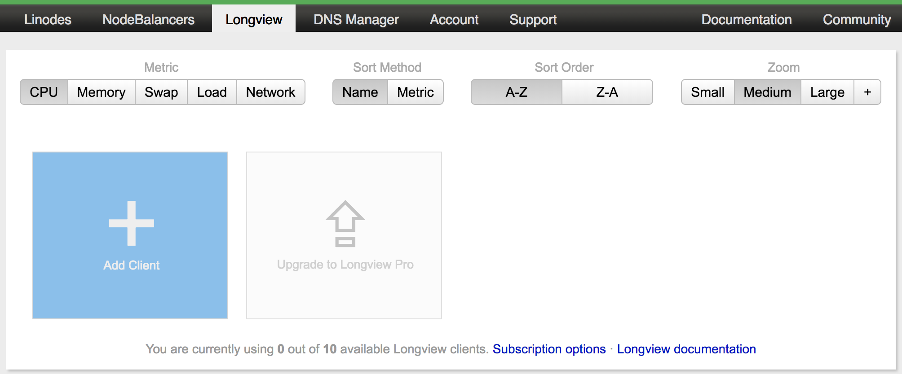
Click the Add Client tile. This will bring up a modal window with a
curlcommand at the center.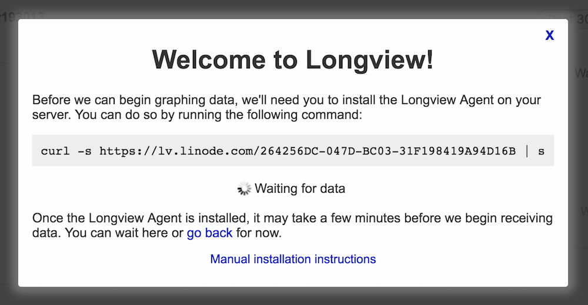
Open a terminal on your local computer and log into your Linode over SSH. Change to the
rootuser:su - rootCopy the full
curlcommand and paste it into the terminal. Press Enter to run it.The installation takes a few minutes and will return you to an empty terminal prompt when finished. Return to the Linode Manager in your browser. The modal window will have closed and you should now see the Longview client’s overview screen.
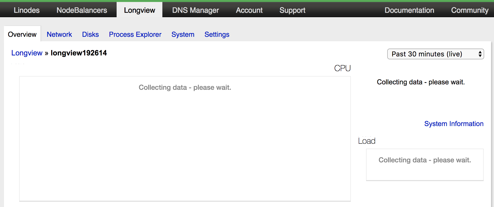
It can take several minutes for data to start showing in the Manager but once it does, you’ll see the graphs and charts populating with your Linode’s metrics.
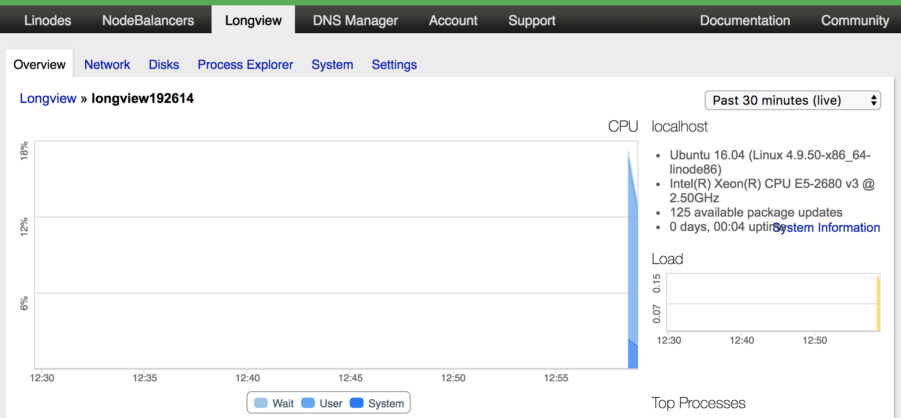
Manual Installation with yum or apt
It’s also possible to manually install Longview for CentOS, Debian, and Ubuntu. You should only need to manually install if the instructions in the previous section failed.
Create a file to hold the repository information:
CentOS
Replace
REVin the repository URL with your CentOS version (e.g., 7). If unsure, you can find your CentOS version number withcat /etc/redhat-release.- /etc/yum.repos.d/longview.repo
-
1 2 3 4 5[longview] name=Longview Repo baseurl=https://yum-longview.linode.com/centos/REV/noarch/ enabled=1 gpgcheck=1
Debian and Ubuntu
Find the codename of the distribution running on your Linode.
root@localhost:~# lsb_release -sc xenialCreate a file with the repository for your distribution codename. In the command below, replace xenial with the output of the previous step.
- /etc/apt/sources.list.d/longview.list
-
1deb http://apt-longview.linode.com/ xenial main
Download the repository’s GPG key and import or move it to the correct location:
CentOS
sudo curl -O https://yum-longview.linode.com/linode.key sudo rpm --import linode.keyDebian and Ubuntu
sudo curl -O https://apt-longview.linode.com/linode.gpg sudo mv linode.gpg /etc/apt/trusted.gpg.d/linode.gpgCreate a directory for the API key:
sudo mkdir /etc/linode/Copy the API key from the Settings tab of your Longview client’s overview page in the Linode Manager. Put the key into a file, replacing the key in the command below with your own.
echo '266096EE-CDBA-0EBB-23D067749E27B9ED' | sudo tee /etc/linode/longview.keyInstall Longview:
CentOS
sudo yum install linode-longviewDebian or Ubuntu
sudo apt-get update sudo apt-get install linode-longview
Longview Client Labels
If you are monitoring multiple systems with Longview, you should relabel the clients in the Linode Manager to the system’s hostname, or some other name which is easier to identify than the default client ID.
Go to the Longview tab in the Linode Manager. You’ll see an overview of all Longview clients on your Linode account.
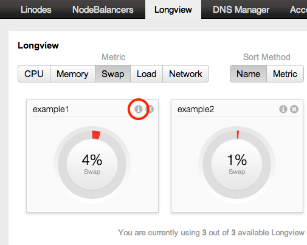
Click the i button at the top left of the client you want to relabel. The webpage shown below appears.
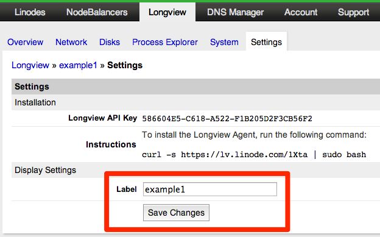
In the Label field, enter a name for the system.
Click Save Changes.
Longview Apps
Once your system is set up as a Longview client, you will also have access to Linode’s Longview Apps. These extend Longview’s statistics reporting to specific services running on your Linode, currently Apache, nginx, and MySQL/MariaDB.
Updating Longview
When an update is available for Longview, you’ll receive a notice of this as a banner at the top of the Linode Manager.
If you are using CentOS, Debian, or Ubuntu, the
linode-longviewpackage will update via the system’s package manager, just like any other upstream package.If you are not using one of the Linux distributions mentioned above, the method for updating Longview is to run the cURL installation command again.
Should the update process ask you to overwrite any of Longview’s init scripts or systemd units with the package maintainer’s version, choose Yes to do so.
Longview’s Data Explained
Overview
The Overview tab shows all of your system’s most important statistics in one place. The information on the graphs is correlated, so when you move your pointer over one graph, data points are automatically displayed on the other graphs at the same time, making it easy to troubleshoot problems with your system.
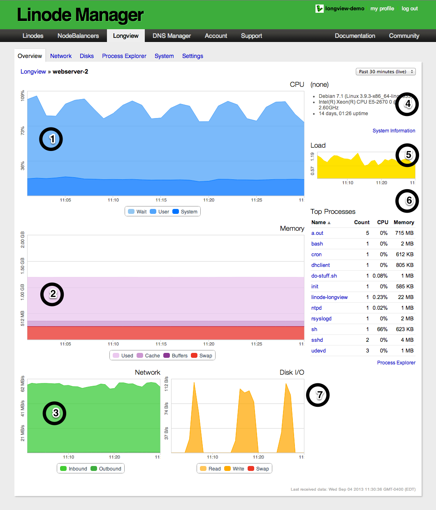
- Percentage of CPU time spent in wait (on disk), in user space, and in kernel space.
- Total amount of RAM being used, as well as the amount of memory in cache, in buffers, and in swap.
- Amount of network data that has been transferred to and from your system.
- Basic information about the system, including the operating system name and version, processor speed, uptime, and available updates.
- Average CPU load.
- Top active processes on the system. To access more detailed information, click the Process Explorer link at the bottom of the chart.
- Disk I/O. This is the amount of data being read from, or written to, the system’s disk storage.
Network
The Network tab allows you to monitor the inbound and outbound traffic to your system, updated every 5 minutes. The All traffic graph at the top of the page shows all incoming and outgoing traffic. The other graphs break that traffic down by Internet Protocol (IP) version and by data traveling over the public internet versus Linode’s private network. To show or hide inbound or outbound traffic on a graph, click the Inbound or Outbound button under it. If you are monitoring a non-Linode system, only a single graph will be shown for each network interface.
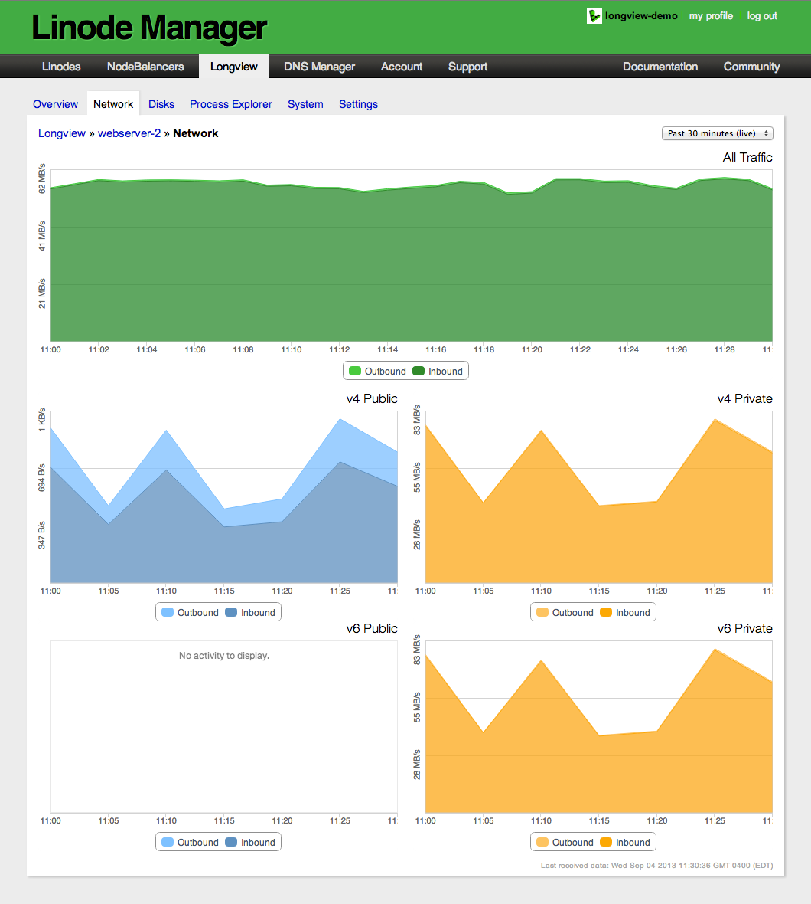
Disks
The Disks tab displays information about storage mounted on your system. Select a disk from the left column and Longview displays the disk’s I/O, available space, and inode use. You can show or hide the read and write lines on the IO graph by clicking Read or Write.
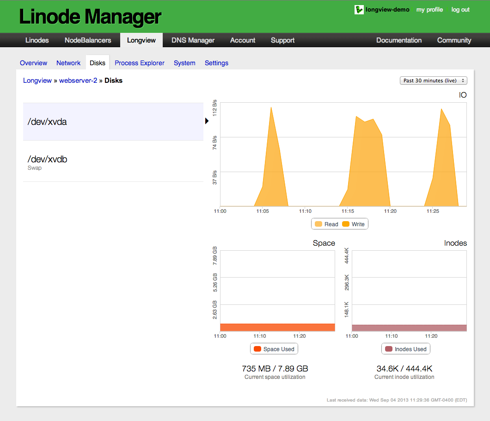
Process Explorer
The Process Explorer tab displays all of the processes that were running on your system during the selected time interval. Select a process to examine its CPU, memory, and IO consumption. If you have a large number of processes running on your system, you can enter the name of the process in the Filter field to search for it, or you can click More at the bottom of the page to scroll through all of the processes.
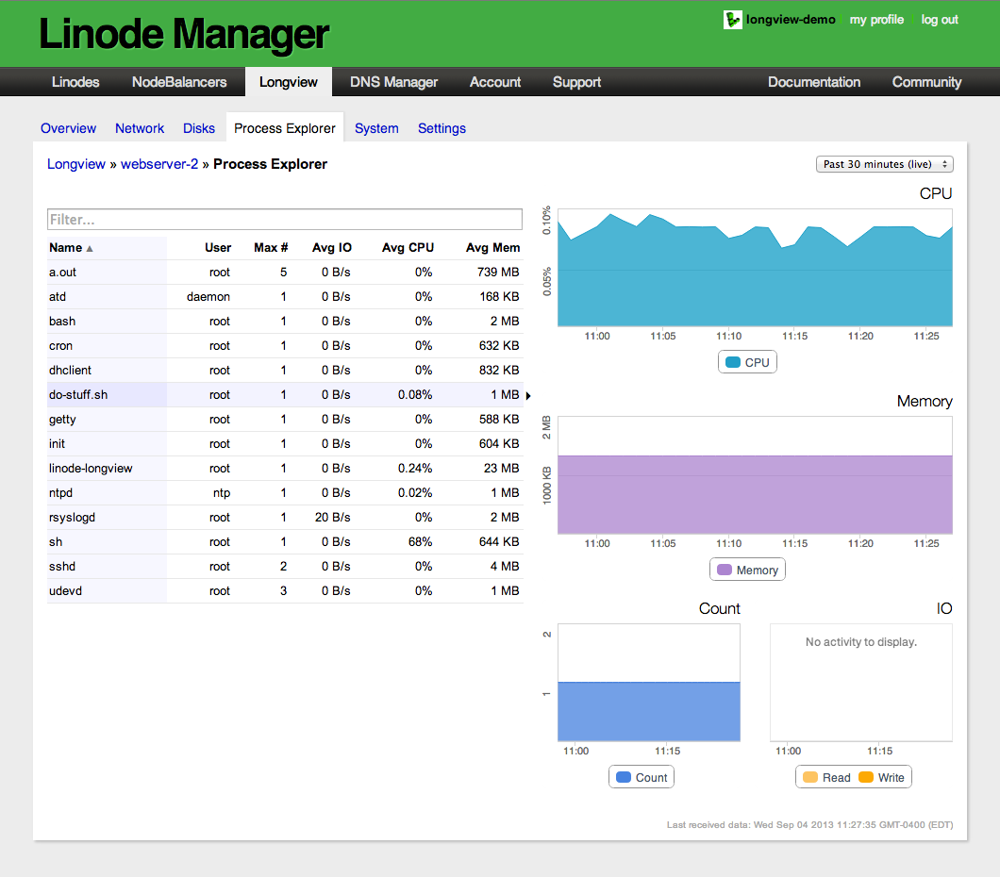
System
Here you’ll find general statistics about your Linode’s hardware resources and network connections. To inspect the services that are actively waiting for a connection, select the listening services button. This is a good way to verify that your services are running and listening on a particular port.
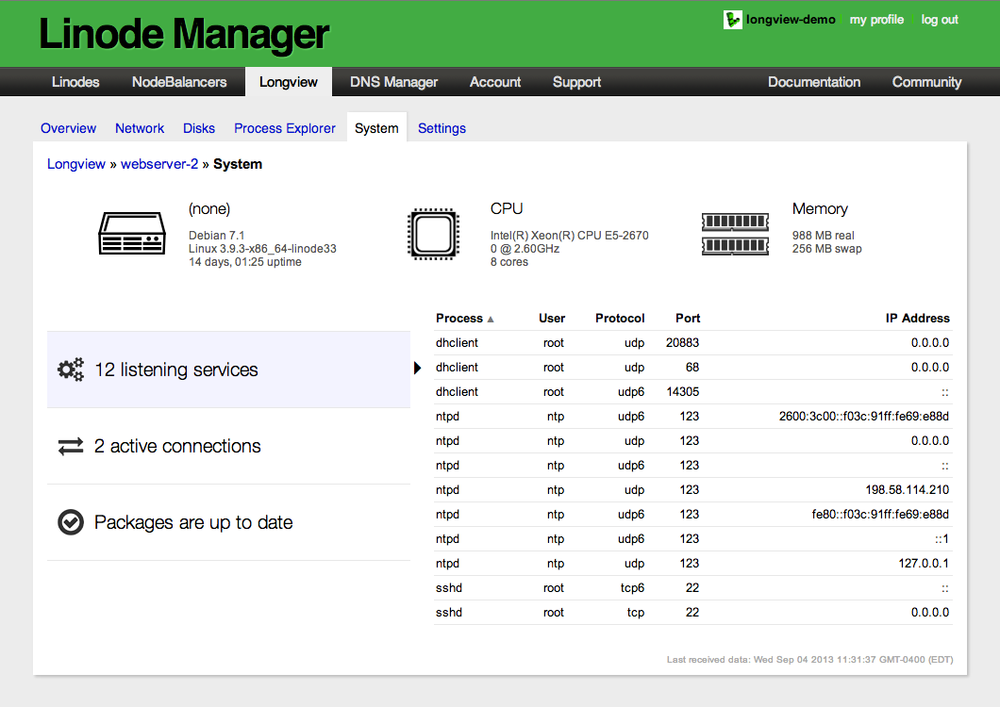
To view active connections to your system, select the active connections button. The root user may also appear in the list of active connections if there is an active SSH connection. That’s because SSH runs as root before dropping privileges to the non-root account, and it never closes the file handle. This does not necessarily mean that the root user is connected via SSH.
The packages button will show if there are package updates available for your Linode’s operating system. Packages are sorted by name, current version number, and new version number. To install the updates, you’ll need to log in to your system and update using your distribution’s package manager.
Data Duration
Longview displays realtime statistics from the past thirty minutes by default, and this data is kept for 12 hours. Longview Pro allows for longer durations of data which is kept for the time you hold the upgrade subscription.
By changing the viewing history, you’ll be able to see statistics for a longer period of time. However, graphs will not automatically update with new data for duration selections other than the default 30 minutes. To reset the time interval and re-enable live updating, select Past 30 minutes (live) from the viewing history dropdown menu.
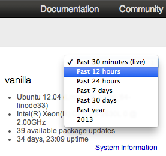
Graph Zoom
Longview allows you to zoom in on graphs to take a closer look at a specific time interval. For example, if you saw a major spike in CPU use that lasted 19 minutes, you could zoom in on that 19 minute interval for more detail. To zoom in, click and drag the pointer to select a specific portion of the graph.
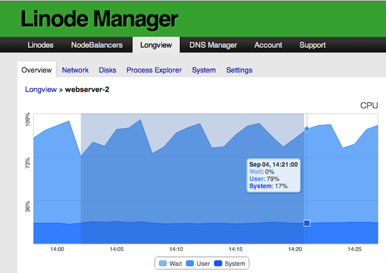
All of the graphs will be updated to display data for the time interval you selected. To reset the zoom view and restore all of the graphs to the default 30 minute time interval, select the Reset Zoom link in the top-right corner.
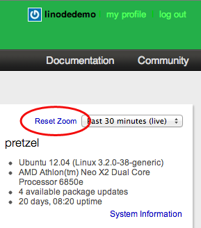
Longview Pro
Longview Free updates every 5 minutes and provides only twelve hours of data history. Longview Pro gives you data resolution at 60 second intervals, and you can view a complete history of your Linode’s data instead of only the previous 30 minutes. To change your plan level, follow these instructions:
At the bottom of the Longview overview page in the Linode Manager, click the Upgrade to Longview Pro tile.
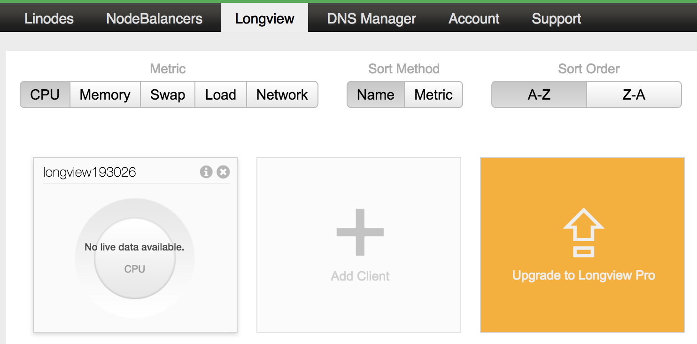
You’ll be taken to the Longview subscriptions page. Select the radio dial of the plan you want to change to.
Click the Continue >> button.
Review your order, then click Complete Order. Please note that it may take up to 24 hours for the upgrade process to complete.
Troubleshooting
If you’re experiencing problems with the Longview client, follow these steps to help determine the cause.
Basic Diagnostics
Ensure that:
Your system is fully updated. Longview also requires Perl 5.8 or later.
The Longview client is running. You can verify with one of the two commands below, depending on your distribution’s initialization system:
sudo systemctl status longview # For distributions with systemd. sudo service longview status # For distributions without systemd.If the Longview client is not running, start it with one of the following commands, depending on your distribution’s init system:
sudo systemctl start longview sudo service longview startIf the service fails to start, check Longview’s log for errors. The log file is located in
/var/log/linode/longview.log.
Debug Mode
Restart the Longview client in debug mode for increased logging verbosity.
First stop the Longview client:
sudo systemctl stop longview # For distributions with systemd. sudo service longview stop # For distributions without systemd.Then restart Longview with the
debugflag:sudo /etc/init.d/longview debugWhen you’re finished collecting information, repeat the first two steps to stop Longview and restart it again without the debug flag.
If Longview does not close properly, find the process ID and kill the process:
ps aux | grep longview sudo kill $PID
Firewall Rules
If your Linode has a firewall, it must allow communication with Longview’s aggregation host at longview.linode.com. You can view your firewall rules with one of the commands below, depending on the firewall controller used by your Linux distribution.
firewalld
sudo firewall-cmd --list-all
iptables
sudo iptables -S
ufw
sudo ufw show added
If the output of those commands show no rules for the Longview domain, you must add them. See our firewall documentation for more information.
Verify API key
The API key given in the Linode Manager should match that on your system in /etc/linode/.
The API key is located on the same page of the Linode Manager as the Longview client label. Follow the instructions above to get to that screen.
SSH into your Linode. The Longview key is located at
/etc/linode/longview.key. Usecatto view the contents of that file and compare it to what’s shown in the Linode Manager:cat /etc/linode/longview.keyThe two should be the same. If they are not, paste the key from the Linode Manager into
longview.key, overwriting anything already there.
Cloned Keys
If you clone a Linode which has Longview installed, you may encounter the following error:
Multiple clients appear to be posting data with this API key. Please check your clients' configuration.
This is caused by both Linodes posting data using the same Longview key. To resolve it, reinstall Longview on the cloned system using the instructions above. This will give the new Linode’s system a Longview API key independent from the system which it was cloned from.
Contact Support
If you still need assistance after performing these checks, please open a support ticket.
Uninstall the Longview Client
In the Linode Manager, select the Longview tab to go to your account’s overview of Longview clients.
Click the X button next to the i at the top right of the client tile you want to remove.
You’ll be asked if you’re sure you want to delete the Longview client. Click Remove this Longview Client to remove it from your account.
Next, remove the Longview client application from the operating system you want to stop monitoring. SSH into your Linode.
Remove the
linode-longviewpackage with the command appropriate for your Linux distribution.CentOS
sudo yum remove linode-longviewDebian or Ubuntu
sudo apt-get remove linode-longviewOther distributions
sudo rm -rf /opt/linode/longview
Join our Community
Find answers, ask questions, and help others.
This guide is published under a CC BY-ND 4.0 license.